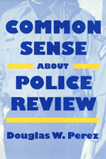

A call for effective police review systems
A call for effective police review systems


 A call for effective police review systems
A call for effective police review systems

|  |
Common Sense about Police ReviewDouglas W. Perezpaper EAN: 978-1-56639-336-2 (ISBN: 1-56639-336-1) |
"This book provides knowledge that will be useful to city governments, civil rights organizations, community leaders, clergy, civilian review board advocates, as well as police chiefs and unions. It sheds considerable light on an important issue...[and] makes clear that there are wide ranging variations among departments in policies, accepted practices, management control of the use of force, and accountability of supervisors and officers who use excessive force."
—Patrick V. Murphy, Director, Police Policy Board of the U.S. Conference of Mayors
Common Sense about Police Review is the first comparative study to consider both civilian and internal police review processes. Using survey research of police attitudes and citizen complaints compiled over fifteen years from police departments across the nation, Douglas W. Perez analyzes past and current review systems as a way to develop criteria for comparing three archetypal systems of police review: internal, external (civilian), and hybrid forms of the two.
High media visibility of several events—the 1988 police riot in New York City's Tompkins Square, the 1991 videotaped beating of Rodney King, and the 1992 beating death of Malice Green by Detroit police detectives—has brought police review back into the public arena; not since civil rights demonstrators clashed with police in the 1960s has officer accountability been so hotly debated.
Crucial to any monitoring system are guidelines, which Perez stresses must insist on rigorous investigations of alleged police abuses, outline strict limitations of police action, strive to bridge gaps between police officers and citizens, and exonerate officers who are found to have acted properly and legally. With these standards, the author asserts, a balance between self-sanctioning and enforced regulation can be achieved. Examining fairness, objectivity, and thoroughness in review systems throughout the country, Perez offers a model for the "ideal" police review system. Included are valuable discussions of both the causes of police attitudes and behavior and the misconceptions and expectations that can contribute to a pervasive public image of police malpractice. Perez provides helpful reflections on the role of politicians and administrators in implementing and maintaining police accountability.
Excerpt available at www.temple.edu/tempress
Acknowledgments
Introduction
Part I: The Problems of Police Review
1. The Nature of Police Malpractice
2. The Limits of Reform
3. Criteria of Evaluation
Part II: Police Review Systems
4. Internal Review
5. Civilian Review
6. The Civilian Monitor
Part III: Implications
7. Agents of Change
8. Review Systems Compared
9. An Ideal Police Review System
Appendix A
Appendix B
Appendix C
Bibliography
Newspaper References
Case References
Index
Douglas W. Perez, Professor of Political Science at Trinity and Champlain Colleges, has authored several dozen studies on the police. From 1970 to 1975, Perez was a deputy sheriff in Contra Costa County, California.
© 2015 Temple University. All Rights Reserved. This page: http://www.temple.edu/tempress/titles/1129_reg.html.